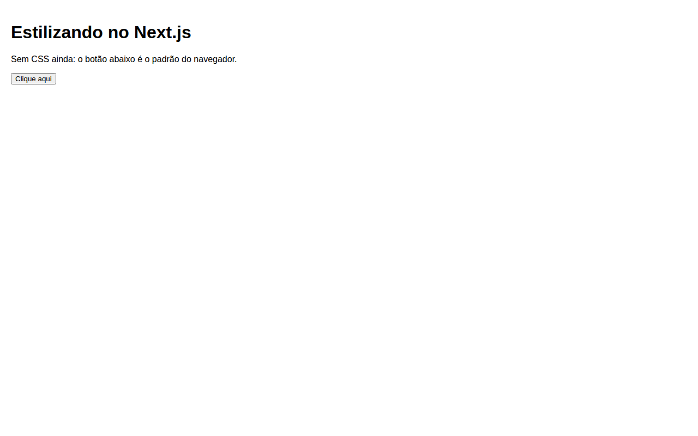

Estilos e CSS
A página da Ana funciona, mas está feia: texto preto no branco, tudo grudado. O Next.js aceita três jeitos de colocar estilo: o CSS global (um arquivo único para o site todo), os CSS Modules (CSS com escopo por componente) e o Tailwind (classes utilitárias, se ela escolheu Yes no create-next-app). Nesta página vamos usar os dois primeiros.
- CSS global:
globals.cssimportado noapp/layout.jsx - CSS Modules:
Nome.module.css+className={styles.classe} - Por que CSS global só pode ser importado no layout raiz (erro real)
- Tailwind opcional: o que muda se escolheu Yes no assistente
- Convenção: componente e módulo lado a lado
A ideia: reboco da casa vs tinta de um só cômodo
Pense no site como uma casa. O CSS global (globals.css) é o reboco e a pintura geral da casa: define a cor da parede de todos os cômodos, a fonte padrão, como os links aparecem em qualquer lugar. Ele é importado uma única vez, no app/layout.jsx, e vale para o site inteiro. É por isso que o Next.js proíbe importar CSS global em qualquer outro lugar — se cada página importasse o reboco, a casa teria dez mãos de tinta diferentes e o resultado seria uma bagunça.
Já o CSS Module é a tinta de um só cômodo: o arquivo Botao.module.css só vale para o componente Botao.jsx que importar ele. O Next.js dá um nome embaralhado para cada classe (tipo Botao_titulo__x7f2a), garantindo que a classe .titulo do botão não vaze para o título de outra página — mesmo que outra página também tenha uma classe chamada .titulo. É isolamento automático, sem você pensar.
E o Tailwind? Se a Ana respondeu Yes na pergunta do create-next-app, o projeto já vem com o Tailwind ligado: em vez de escrever CSS, ela usa classes prontas no HTML (className="bg-blue-500 text-white p-4"). É um kit de LEGO de estilos. Neste guia vamos focar em CSS puro para você entender a base, mas se o seu projeto tem Tailwind, pode usar as classes direto.
Ana pinta a parede de casa: uma demão de tinta vale para tudo
Quando a Ana pinta a sala de azul, ela não pinta cada objeto de azul — ela pinta a parede inteira de uma vez, e tudo dentro herda a cor. Esse é o CSS global (globals.css, importado uma única vez no app/layout.jsx): uma demão de tinta para o site todo — cores, fontes padrão, espaçamento base. É o "reboco da casa".
Agora, se a Ana quer que só aquele botão seja verde — sem deixar o resto do site verde — ela usa um CSS Module (Botao.module.css): a tinta fica dentro de um potinho etiquetado, e a classe vira styles.botao, um nome único que não vaza para o resto da casa. Global para o comum, module para o específico: é essa a regra que deixa o projeto dela organizado.
1) CSS global: globals.css no layout
import "./globals.css"; // ← CSS global, só aqui no layout raiz // ... resto do layout
/* vale para o site inteiro */
body {
font-family: Arial, sans-serif;
background: #fafafa;
color: #111;
margin: 0;
}
h1 {
color: #2563eb;
}
nav a {
margin-right: 16px;
color: #111;
text-decoration: none;
}
2) CSS Module: estilos com escopo por componente
Crie o módulo ao lado do componente e importe com um nome (por convenção, styles):
import styles from "./Botao.module.css";
export default function Botao() {
return <button className={styles.botao}>Clique aqui</button>;
}
/* só vale para o Botao.jsx — o .botao daqui não conflita com outro */
.botao {
background: #2563eb;
color: #fff;
border: none;
border-radius: 8px;
padding: 10px 20px;
font-size: 16px;
cursor: pointer;
}
.botao:hover {
background: #1d4ed8;
}

.module.css.| Tipo | Arquivo | Import | Escopo |
|---|---|---|---|
| CSS global | globals.css | só no app/layout.jsx | Site inteiro |
| CSS Module | Nome.module.css | no componente: import styles from "./Nome.module.css" | Só aquele componente |
| Tailwind (opcional) | classes no HTML | já vem pronto se escolheu Yes | Onde aplicar a classe |
| CSS-in-JS | — | não é o foco do guia | — |
Missão: o botão está sem cor nenhuma. Adicione style={{ backgroundColor: "seagreen", color: "white" }} na tag <button> — é o estilo inline, o mesmo mecanismo que o CSS Module gera por baixo. Rode ▶ e ✔.
function App() {
return (
<div style={{ padding: 20, fontFamily: "sans-serif" }}>
<h1>Estilizando no Next.js</h1>
<p>Sem CSS ainda: o botão abaixo é o padrão do navegador.</p>
<button>Clique aqui</button>
</div>
);
}
function App() {
return (
<div style={{ padding: 20, fontFamily: "sans-serif" }}>
<h1>Estilizando no Next.js</h1>
<p>Agora com estilo inline no botão:</p>
<button style={{ backgroundColor: "seagreen", color: "white", padding: "8px 16px", border: 0, borderRadius: 6 }}>
Clique aqui
</button>
</div>
);
}
Quando dá errado
Error: Global CSS cannot be imported from files other than your Custom App. Due to its global side effects, global CSS cannot be imported from within the app directory. Please move it to app/layout.jsx. Dica do guia: no App Router, CSS global (globals.css) só entra pelo app/layout.jsx. Em página/componente, use CSS Module (.module.css).
styles.):(não dá erro — a classe simplesmente não aparece; o botão fica sem estilo)
<button className="botao"> ← errado no módulo
<button className={styles.botao}> ← certo
Dica do guia: com CSS Module, a classe é acessada como propriedade do objeto
importado: styles.botao — nunca string "botao".
Exercícios
1. Onde o CSS global (globals.css) deve ser importado no App Router?
2. Como se usa uma classe de um CSS Module dentro do JSX?
Exercício 1
Se o componente é Botao.jsx, como deve se chamar o arquivo de CSS Module dele (convenção lado a lado)?